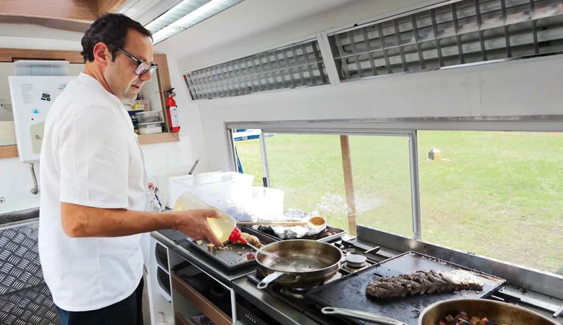
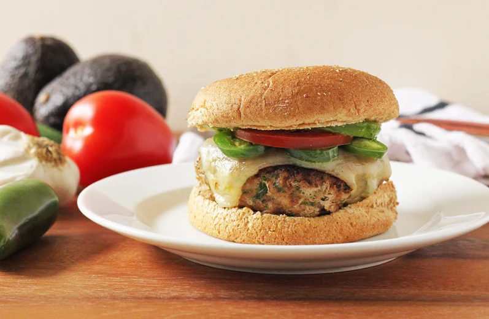
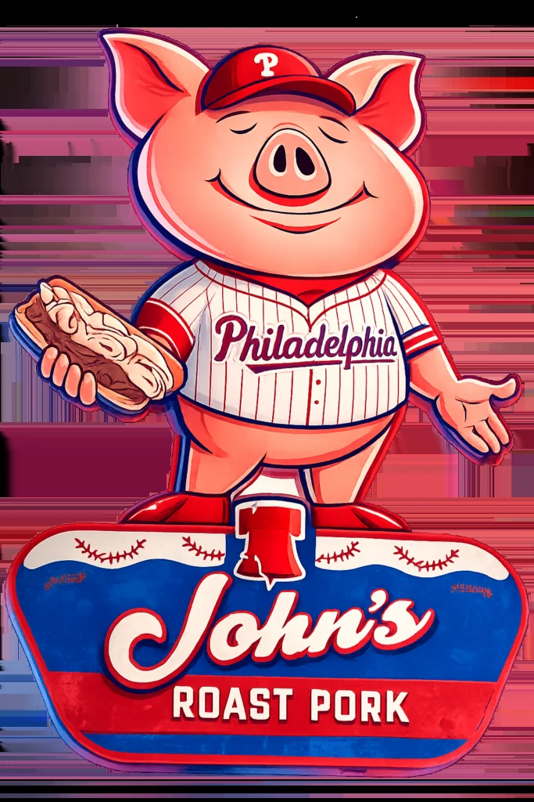
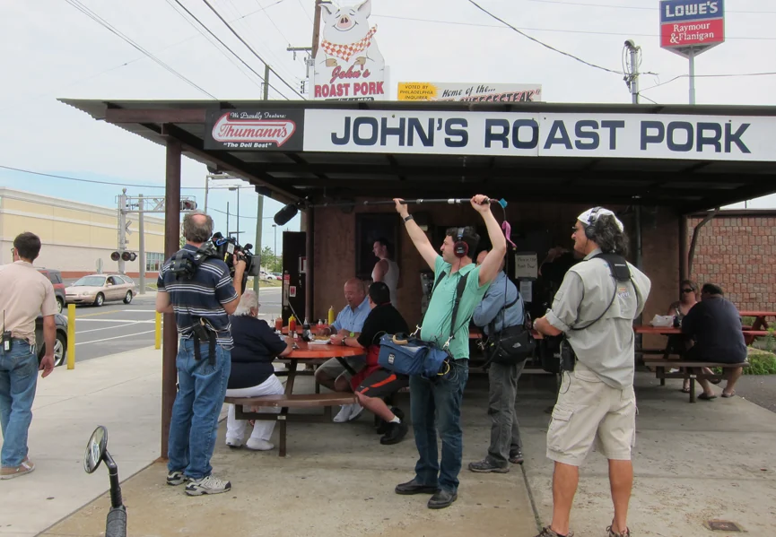
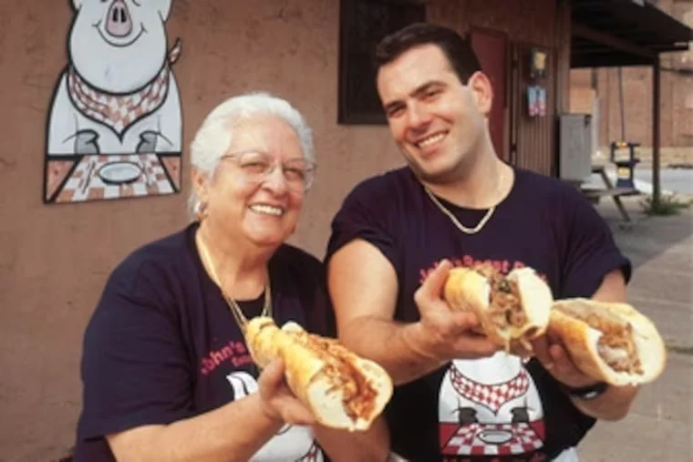
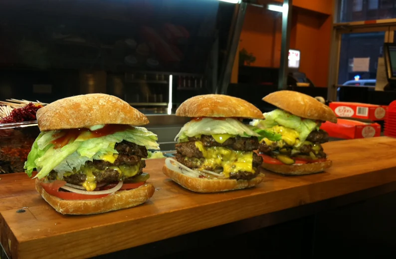
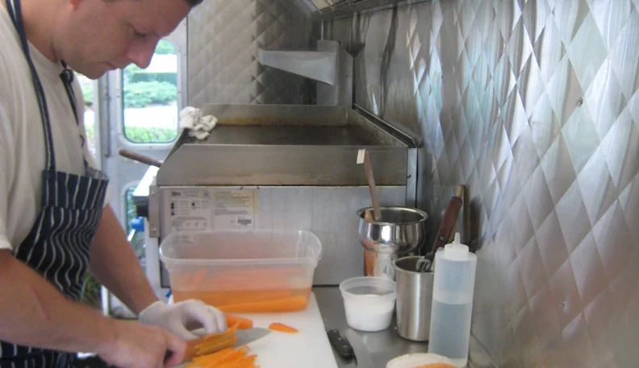

Philadelphia | Restaurant
Welcome To John's Roast Pork
Since 1930, Serving Philadelphia Award Winning Roast Pork & Cheesesteaks


Worth knowing
Hot roast pork, roast beef, meatball with red gravy and fried meatball sandwiches
Since 1930, Serving Philadelphia Award Winning Roast Pork & Cheesesteaks
Explore the official siteThe story
Our Story
Roast Pork was the featured sandwich then to and now! Our Roast Pork is seasoned according to an Olde World family recipe and is slow roasted and sliced to make the perfect sandwich!
Domenico Bucci started the family business at Weccacoe and Snyder in 1930.

See what makes this place distinct.




Visit and contact
Make the next visit easy.
Verified details and direct official links, together in one place.